CODING AGENTS AS PIXEL WORLD MODELS
traex/GPT-6.1-Sol · openve_0058
点击播放 · 原生 RGB 像素
编辑前的完整原视频
上方为编辑结果；原视频是模型获准使用的输入。下方为逐轮保存的编辑候选。
逐轮保存的候选
回放视频、检查图与代码变化。
每份候选均可单独播放。实际图片检查记录在下方工具轨迹中。
候选 01播放与检查图
点击播放 · 原生 RGB 像素

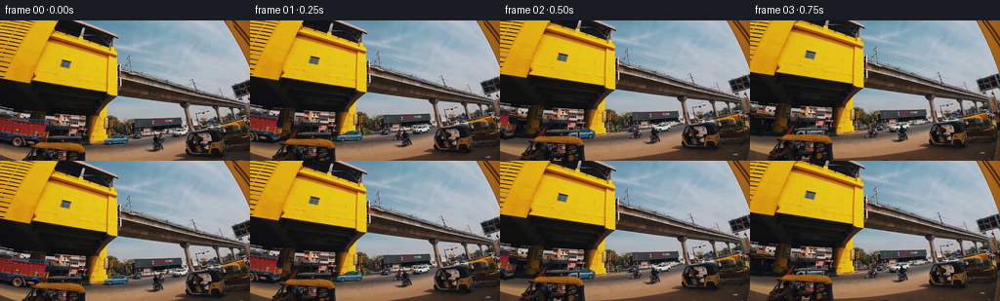
展开代码变化
--- 上一保存版本
+++ 本次保存版本
@@ -0,0 +1,149 @@
+from pathlib import Path
+import json
+import cv2
+import numpy as np
+from PIL import Image, ImageDraw, ImageFilter
+import artifact_io
+
+ROOT=Path(__file__).resolve().parent
+# Measured vehicle coordinates in the supplied 1280 x 720 source.
+# nose, length, front ground, height, perspective vertical shear, wheel positions
+TRACK=[(532,125,637,49,-5,.26,.86),
+ (445,131,622,54,-4,.23,.84),
+ (349,138,610,55,-5,.22,.83),
+ (232,151,603,59,-5,.20,.81),
+ (123,154,595,57,-2,.18,.79),
+ (10,158,581,57,13,.16,.75),
+ (-94,157,569,57,10,.14,.73)]
+
+def render_car(t, original, index):
+ L,W,G,H,slant,wf,wr=t
+ size=(1280,720)
+ def point(u,v): return (L+W*u,G-H+H*v+slant*u)
+ def poly(draw,pts,color): draw.polygon([point(*p) for p in pts],fill=color)
+ def line(draw,pts,color,width=1): draw.line([point(*p) for p in pts],fill=color,width=width,joint='curve')
+ def curve(points,n=16):
+ p=np.array(points,float)
+ return [tuple((1-s)**3*p[0]+3*(1-s)**2*s*p[1]+3*(1-s)*s*s*p[2]+s**3*p[3]) for s in np.linspace(0,1,n)]
+ # The canopy follows the original silhouette, the nose and rear quarter are sculpted.
+ roof_start=.43-.11*max(0,index-2)/4
+ roof_end=.70-.035*max(0,index-2)
+ shape=[(.005,.83),(.01,.60),(.04,.52),(.13,.46),(.27,.40)]
+ shape+=curve([(.27,.40),(roof_start-.07,.22),(roof_start-.05,.045),(roof_start+.055,.035)])
+ shape+=curve([(roof_start+.055,.035),(roof_start+.12,.009),(roof_end,.005),(roof_end+.075,.105)])
+ shape+=curve([(roof_end+.075,.105),(.85,.23),(.85,.27),(.94,.30)])
+ shape +=[(.992,.34),(1,.69),(.979,.85),(.91,.91),(.08,.91)]
+ silhouette=Image.new('L',size,0);d=ImageDraw.Draw(silhouette);poly(d,shape,255)
+ # Tire contact geometry.
+ def ellipse(draw,u,v,rx,ry,fill):
+ x,y=point(u,v);draw.ellipse((x-rx,y-ry,x+rx,y+ry),fill=fill)
+ for u in (wf,wr): ellipse(d,u,.80,W*.079,H*.205,255)
+ # A gradient and lightly modulated panel reflection keep the replacement photographic.
+ yy,xx=np.mgrid[:720,:1280]
+ U=(xx-L)/W;V=(yy-(G-H)-slant*U)/H
+ highlights=np.exp(-((V-.46)/.105)**2)
+ base=np.zeros((720,1280,3),np.float32)
+ for c,(a,b) in enumerate([(54,69),(77,81),(91,87)]):
+ base[:,:,c]=a+b*highlights-21*np.maximum(V-.57,0)
+ native=original.astype(np.float32).mean(2)
+ detail=cv2.GaussianBlur(native,(0,0),1.0)
+ texture=(native-detail)*.21
+ base+=texture[...,None]
+ body=Image.fromarray(np.uint8(np.clip(base,0,255)))
+ d=ImageDraw.Draw(body)
+ # Panoramic roof / dark wraparound glazing.
+ glass=[(.285,.391),(roof_start+.005,.135),(roof_start+.075,.077),(roof_end+.012,.067),(roof_end+.085,.147),(.818,.313),(.784,.393)]
+ poly(d,glass,(19,40,48))
+ poly(d,[(.305,.365),(roof_start+.02,.154),(roof_start+.09,.102),(roof_end,.10),(roof_end+.035,.123),(.752,.269),(.699,.325)],(47,74,83))
+ line(d,[(roof_start+.022,.149),(roof_start+.09,.104),(roof_end,.103)],(113,136,145),1)
+ # A-pillars, window belt and slim mirror.
+ line(d,[(roof_start+.045,.12),(.424,.38)],(24,39,47),2)
+ line(d,[(.284,.403),(.785,.409),(.88,.331)],(42,59,68),2)
+ line(d,[(.51,.10),(.502,.394)],(23,37,42),1)
+ poly(d,[(.335,.37),(.367,.35),(.396,.40),(.39,.441),(.34,.428)],(40,64,75))
+ # Hood crease and smooth faceted lower body.
+ line(d,[(.064,.532),(.25,.434),(.315,.452)],(173,187,189),1)
+ poly(d,[(.31,.70),(.80,.65),(.923,.55),(.928,.79),(.327,.845)],(51,78,94))
+ line(d,[(.32,.55),(.70,.527),(.87,.469)],(123,146,155),1)
+ line(d,[(.39,.461),(.393,.76)],(47,67,77),1)
+ line(d,[(.66,.432),(.684,.753)],(45,66,79),1)
+ line(d,[(.436,.50),(.481,.496)],(171,189,190),1)
+ line(d,[(.7,.465),(.744,.455)],(142,163,175),1)
+ # The rear is progressively more visible as the car passes the camera.
+ tailface=.955-.026*max(0,index-1)
+ poly(d,[(tailface,.32),(.993,.354),(1,.699),(.975,.858),(tailface-.026,.821)],(41,64,80))
+ line(d,[(tailface+.008,.64),(.988,.62)],(121,141,151),1)
+ # Full aerodynamic wheel covers, not the original spokes.
+ for u in (wf,wr):
+ ellipse(d,u,.80,W*.084,H*.219,(20,26,29))
+ ellipse(d,u,.80,W*.061,H*.158,(98,123,135))
+ ellipse(d,u,.80,W*.052,H*.137,(43,62,76))
+ ellipse(d,u,.80,W*.030,H*.077,(109,129,141))
+ ellipse(d,u,.80,W*.016,H*.044,(40,56,66))
+ cx,cy=point(u,.8)
+ for angle in np.linspace(0,np.pi*2,6,endpoint=False):
+ x=cx+np.cos(angle)*W*.040;y=cy+np.sin(angle)*H*.110
+ d.line((cx,cy,x,y),fill=(91,113,125),width=1)
+ # Blue accent light strips use restrained scene-scale bloom.
+ lights=Image.new('RGBA',size,(0,0,0,0));ld=ImageDraw.Draw(lights)
+ line(ld,[(.023,.595),(.095,.56),(.173,.553)],(38,170,255,255),2)
+ line(ld,[(.022,.675),(.026,.728)],(41,184,255,255),1)
+ line(ld,[(wf+.095,.861),(wr-.083,.841)],(21,165,255,235),2)
+ line(ld,[(.943,.366),(.99,.407),(.988,.479)],(28,156,255,255),2)
+ for u in (wf,wr):
+ cx,cy=point(u,.80);rx=W*.054;ry=H*.14
+ ld.arc((cx-rx,cy-ry,cx+rx,cy+ry),205,335,fill=(35,136,218,210),width=1)
+ bloom=lights.filter(ImageFilter.GaussianBlur(2.15))
+ body=Image.alpha_composite(body.convert('RGBA'),bloom)
+ body=Image.alpha_composite(body,lights).convert('RGB')
+ # Preserve every foreground rickshaw roof, upright, passenger, flag and cable.
+ visible=Image.new('L',size,255);od=ImageDraw.Draw(visible)
+ def block(p):od.polygon(p,fill=0)
+ if index==2:
+ block([(225,559),(273,551),(394,552),(410,559),(411,573),(226,577)])
+ block([(387,570),(410,570),(412,612),(396,611),(393,589)])
+ block([(260,587),(337,588),(374,592),(413,608),(440,626),(440,720),(200,720)])
+ elif index==3:
+ block([(219,554),(242,547),(380,545),(399,553),(399,566),(220,574)])
+ block([(282,563),(295,562),(297,592),(282,592)])
+ block([(373,561),(392,560),(397,600),(379,601)])
+ block([(212,585),(245,582),(280,582),(326,585),(364,588),(405,604),(430,720),(170,720)])
+ elif index==4:
+ block([(203,545),(231,540),(377,540),(389,548),(389,561),(203,570)])
+ block([(165,545),(213,516),(193,569),(186,579),(154,584)])
+ block([(177,579),(230,577),(285,580),(367,584),(406,603),(421,720),(157,720)])
+ block([(271,560),(283,560),(284,588),(272,588)])
+ elif index==5:
+ block([(150,574),(202,571),(280,577),(401,602),(420,720),(134,720)])
+ block([(163,558),(188,536),(180,575),(165,583)])
+ od.line([(137,572),(153,550)],fill=0,width=2)
+ # For windows through the rickshaw, retain black silhouette of passengers and trim.
+ vis=np.array(visible,dtype=np.float32)/255
+ if index in (3,4):
+ lum=original.astype(float).mean(2)
+ region=(xx>L)&(xx<L+W)&(yy>G-H*.65)&(yy<G+3)
+ gate=np.clip((lum-52)/38,0,1)
+ vis[region]*=gate[region]
+ mask=np.array(silhouette,dtype=np.float32)/255*vis
+ # Antialias in source coordinates. Only the edited pixel residual is downsampled,
+ # so all content outside the replacement remains bit-identical to the input.
+ mask=cv2.GaussianBlur(mask,(0,0),.47)
+ residual=(np.array(body,dtype=np.float32)-original.astype(np.float32))*mask[...,None]
+ return cv2.resize(residual,(256,144),interpolation=cv2.INTER_AREA)
+
+def main():
+ sampled=np.load(ROOT/'source_pixels.npz')['rgb']
+ info=json.loads((ROOT/'source_info.json').read_text())
+ cap=cv2.VideoCapture(str(ROOT/'source_video.mp4'))
+ result=sampled.copy()
+ for i,t in enumerate(TRACK):
+ cap.set(cv2.CAP_PROP_POS_FRAMES,info['original_frame_indices'][i])
+ ok,bgr=cap.read()
+ if not ok: raise RuntimeError('Cannot decode source frame')
+ src=cv2.cvtColor(bgr,cv2.COLOR_BGR2RGB)
+ delta=render_car(t,src,i)
+ result[i]=np.uint8(np.clip(sampled[i].astype(np.float32)+delta,0,255).round())
+ cap.release()
+ artifact_io.save(result,ROOT)
+
+if __name__=='__main__':main()
候选 02播放与检查图
点击播放 · 原生 RGB 像素

展开代码变化
--- 上一保存版本
+++ 本次保存版本
@@ -43,7 +43,7 @@
U=(xx-L)/W;V=(yy-(G-H)-slant*U)/H
highlights=np.exp(-((V-.46)/.105)**2)
base=np.zeros((720,1280,3),np.float32)
- for c,(a,b) in enumerate([(54,69),(77,81),(91,87)]):
+ for c,(a,b) in enumerate([(35,61),(49,71),(65,81)]):
base[:,:,c]=a+b*highlights-21*np.maximum(V-.57,0)
native=original.astype(np.float32).mean(2)
detail=cv2.GaussianBlur(native,(0,0),1.0)
@@ -62,9 +62,10 @@
line(d,[(.51,.10),(.502,.394)],(23,37,42),1)
poly(d,[(.335,.37),(.367,.35),(.396,.40),(.39,.441),(.34,.428)],(40,64,75))
# Hood crease and smooth faceted lower body.
- line(d,[(.064,.532),(.25,.434),(.315,.452)],(173,187,189),1)
- poly(d,[(.31,.70),(.80,.65),(.923,.55),(.928,.79),(.327,.845)],(51,78,94))
- line(d,[(.32,.55),(.70,.527),(.87,.469)],(123,146,155),1)
+ line(d,[(.064,.532),(.25,.434),(.315,.452)],(142,158,169),1)
+ poly(d,[(.021,.70),(.083,.68),(.077,.82),(.013,.814)],(15,28,39))
+ poly(d,[(.31,.70),(.80,.65),(.923,.55),(.928,.79),(.327,.845)],(33,50,67))
+ line(d,[(.32,.55),(.70,.527),(.87,.469)],(98,120,133),1)
line(d,[(.39,.461),(.393,.76)],(47,67,77),1)
line(d,[(.66,.432),(.684,.753)],(45,66,79),1)
line(d,[(.436,.50),(.481,.496)],(171,189,190),1)
@@ -86,13 +87,13 @@
d.line((cx,cy,x,y),fill=(91,113,125),width=1)
# Blue accent light strips use restrained scene-scale bloom.
lights=Image.new('RGBA',size,(0,0,0,0));ld=ImageDraw.Draw(lights)
- line(ld,[(.023,.595),(.095,.56),(.173,.553)],(38,170,255,255),2)
- line(ld,[(.022,.675),(.026,.728)],(41,184,255,255),1)
- line(ld,[(wf+.095,.861),(wr-.083,.841)],(21,165,255,235),2)
- line(ld,[(.943,.366),(.99,.407),(.988,.479)],(28,156,255,255),2)
+ line(ld,[(.023,.595),(.095,.56),(.173,.553)],(91,222,255,255),3)
+ line(ld,[(.022,.675),(.026,.728)],(67,211,255,255),2)
+ line(ld,[(wf+.095,.861),(wr-.083,.841)],(48,203,255,255),3)
+ line(ld,[(.943,.366),(.99,.407),(.988,.479)],(61,212,255,255),3)
for u in (wf,wr):
cx,cy=point(u,.80);rx=W*.054;ry=H*.14
- ld.arc((cx-rx,cy-ry,cx+rx,cy+ry),205,335,fill=(35,136,218,210),width=1)
+ ld.arc((cx-rx,cy-ry,cx+rx,cy+ry),205,335,fill=(38,163,238,235),width=2)
bloom=lights.filter(ImageFilter.GaussianBlur(2.15))
body=Image.alpha_composite(body.convert('RGBA'),bloom)
body=Image.alpha_composite(body,lights).convert('RGB')
候选 03播放与检查图
点击播放 · 原生 RGB 像素
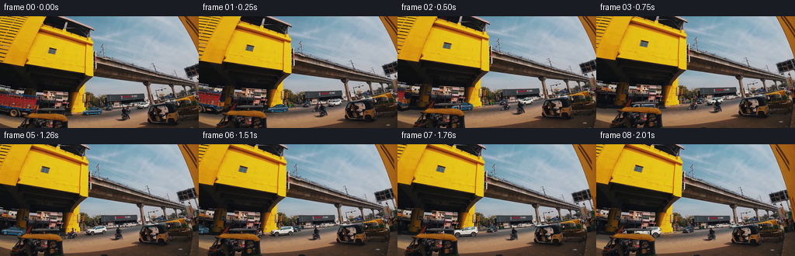
展开代码变化
--- 上一保存版本
+++ 本次保存版本
@@ -146,5 +146,9 @@
result[i]=np.uint8(np.clip(sampled[i].astype(np.float32)+delta,0,255).round())
cap.release()
artifact_io.save(result,ROOT)
+ writer=cv2.VideoWriter(str(ROOT/'edited_video.mp4'),cv2.VideoWriter_fourcc(*'mp4v'),info['effective_fps'],(256,144))
+ if not writer.isOpened(): raise RuntimeError('Video encoder unavailable')
+ for frame in result: writer.write(cv2.cvtColor(frame,cv2.COLOR_RGB2BGR))
+ writer.release()
if __name__=='__main__':main()
可观测工具轨迹
实际执行的命令与返回图片。
命令 1exit 0
/bin/bash -lc "ls -la && cat prompt.txt && printf '\\n---RULES---\\n' && cat GENERATION_RULES.md"
命令 2exit 0
/bin/bash -lc "cat source_info.json && cat task_spec.json && cat artifact_io.py && python - <<'PY'
import numpy as np
from PIL import Image
x=np.load('source_pixels.npz');print(x.files)
for k in x.files:
a=x[k];print(k,a.shape,a.dtype)
if a.ndim==4:
for i,f in enumerate(a):Image.fromarray(f).resize((1024,576)).save(f'.tmp/source_{i}.png')
PY"命令 3exit 0
/bin/bash -lc "python - <<'PY'
import numpy as np
from PIL import Image,ImageDraw
f=np.load('source_pixels.npz')['rgb'];sheet=Image.new('RGB',(640*3,240*3))
for i,x in enumerate(f):
im=Image.fromarray(x).crop((60,103,160,134)).resize((640,198))
ImageDraw.Draw(im).text((3,3),str(i),fill=(255,0,0));sheet.paste(im,((i%3)*640,(i//3)*240))
sheet.save('.tmp/car_tracks.png')
PY"命令 4exit 0
/bin/bash -lc "python - <<'PY'
import cv2
from PIL import Image, ImageDraw
cap=cv2.VideoCapture('source_video.mp4')
for i,idx in enumerate([0,13,25,38,50,63,75,88,100]):
cap.set(1,idx);ok,bgr=cap.read()
if ok:
a=cv2.cvtColor(bgr,cv2.COLOR_BGR2RGB)
Image.fromarray(a).crop((0,520,680,650)).resize((1360,260)).save(f'.tmp/hi_car_{i}.png')
PY"命令 5exit 0
/bin/bash -lc "python - <<'PY'
import cv2
from PIL import Image,ImageDraw
cap=cv2.VideoCapture('source_video.mp4');sheet=Image.new('RGB',(800*3,300*3),(40,40,40))
for i,idx in enumerate([0,13,25,38,50,63,75,88,100]):
cap.set(1,idx);ok,bgr=cap.read()
a=cv2.cvtColor(bgr,cv2.COLOR_BGR2RGB);Image.fromarray(a).save(f'.tmp/original_{i}.png')
im=Image.fromarray(a).crop((0,510,700,655)).resize((800,166))
d=ImageDraw.Draw(im);d.text((3,3),f'{i}',fill='red')
for x in range(0,140,10):
xx=x*5/700*800;d.line((xx,0,xx,166),fill=(255,50,50),width=1);d.text((xx,166-12),str(x),fill=(255,100,100))
sheet.paste(im,((i%3)*800,(i//3)*300))
sheet.save('.tmp/track_grid.png')
PY"命令 6exit 0
/bin/bash -lc "python - <<'PY'
from PIL import Image,ImageDraw
for i in range(7):
im=Image.open(f'.tmp/original_{i}.png').crop((0,510,680,650)).resize((1360,280))
d=ImageDraw.Draw(im)
for x in range(0,136,5):
xx=x*10;d.line((xx,0,xx,280),fill=(190,35,35));d.text((xx+2,268),str(x),fill=(255,80,80))
for y in range(104,130,2):
yy=(y*5-510)*2;d.line((0,yy,1360,yy),fill=(190,35,35));d.text((0,yy+2),str(y),fill=(255,80,80))
im.save(f'.tmp/grid_{i}.png')
PY"命令 7exit 0
/bin/bash -lc "python - <<'PY'
from PIL import Image,ImageDraw
bounds=[(520,560,675,642),(438,540,585,625),(338,525,500,610),(220,515,395,595),(110,510,300,595),(0,500,180,590),(0,490,80,585)]
for i,b in enumerate(bounds):
im=Image.open(f'.tmp/original_{i}.png').crop(b).resize(((b[2]-b[0])*4,(b[3]-b[1])*4))
im.save(f'.tmp/detail_{i}.png')
PY"命令 8exit 0
/bin/bash -lc "cat > generate.py <<'PY'
from pathlib import Path
import json
import cv2
import numpy as np
from PIL import Image, ImageDraw, ImageFilter
import artifact_io
ROOT=Path(__file__).resolve().parent
# Measured vehicle coordinates in the supplied 1280 x 720 source.
# nose, length, front ground, height, perspective vertical shear, wheel positions
TRACK=[(532,125,637,49,-5,.26,.86),
(445,131,622,54,-4,.23,.84),
(349,138,610,55,-5,.22,.83),
(232,151,603,59,-5,.20,.81),
(123,154,595,57,-2,.18,.79),
(10,158,581,57,13,.16,.75),
(-94,157,569,57,10,.14,.73)]
def render_car(t, original, index):
L,W,G,H,slant,wf,wr=t
size=(1280,720)
def point(u,v): return (L+W*u,G-H+H*v+slant*u)
def poly(draw,pts,color): draw.polygon([point(*p) for p in pts],fill=color)
def line(draw,pts,color,width=1): draw.line([point(*p) for p in pts],fill=color,width=width,joint='curve')
def curve(points,n=16):
p=np.array(points,float)
return [tuple((1-s)**3*p[0]+3*(1-s)**2*s*p[1]+3*(1-s)*s*s*p[2]+s**3*p[3]) for s in np.linspace(0,1,n)]
# The canopy follows the original silhouette, the nose and rear quarter are sculpted.
roof_start=.43-.11*max(0,index-2)/4
roof_end=.70-.035*max(0,index-2)
shape=[(.005,.83),(.01,.60),(.04,.52),(.13,.46),(.27,.40)]
shape+=curve([(.27,.40),(roof_start-.07,.22),(roof_start-.05,.045),(roof_start+.055,.035)])
shape+=curve([(roof_start+.055,.035),(roof_start+.12,.009),(roof_end,.005),(roof_end+.075,.105)])
shape+=curve([(roof_end+.075,.105),(.85,.23),(.85,.27),(.94,.30)])
shape +=[(.992,.34),(1,.69),(.979,.85),(.91,.91),(.08,.91)]
silhouette=Image.new('L',size,0);d=ImageDraw.Draw(silhouette);poly(d,shape,255)
# Tire contact geometry.
def ellipse(draw,u,v,rx,ry,fill):
x,y=point(u,v);draw.ellipse((x-rx,y-ry,x+rx,y+ry),fill=fill)
for u in (wf,wr): ellipse(d,u,.80,W*.079,H*.205,255)
# A gradient and lightly modulated panel reflection keep the replacement photographic.
yy,xx=np.mgrid[:720,:1280]
U=(xx-L)/W;V=(yy-(G-H)-slant*U)/H
highlights=np.exp(-((V-.46)/.105)**2)
base=np.zeros((720,1280,3),np.float32)
for c,(a,b) in enumerate([(54,69),(77,81),(91,87)]):
base[:,:,c]=a+b*highlights-21*np.maximum(V-.57,0)
native=original.astype(np.float32).mean(2)
detail=cv2.GaussianBlur(native,(0,0),1.0)
texture=(native-detail)*.21
base+=texture[...,None]
body=Image.fromarray(np.uint8(np.clip(base,0,255)))
d=ImageDraw.Draw(body)
# Panoramic roof / dark wraparound glazing.
glass=[(.285,.391),(roof_start+.005,.135),(roof_start+.075,.077),(roof_end+.012,.067),(roof_end+.085,.147),(.818,.313),(.784,.393)]
poly(d,glass,(19,40,48))
poly(d,[(.305,.365),(roof_start+.02,.154),(roof_start+.09,.102),(roof_end,.10),(roof_end+.035,.123),(.752,.269),(.699,.325)],(47,74,83))
line(d,[(roof_start+.022,.149),(roof_start+.09,.104),(roof_end,.103)],(113,136,145),1)
# A-pillars, window belt and slim mirror.
line(d,[(roof_start+.045,.12),(.424,.38)],(24,39,47),2)
line(d,[(.284,.403),(.785,.409),(.88,.331)],(42,59,68),2)
line(d,[(.51,.10),(.502,.394)],(23,37,42),1)
poly(d,[(.335,.37),(.367,.35),(.396,.40),(.39,.441),(.34,.428)],(40,64,75))
# Hood crease and smooth faceted lower body.
line(d,[(.064,.532),(.25,.434),(.315,.452)],(173,187,189),1)
poly(d,[(.31,.70),(.80,.65),(.923,.55),(.928,.79),(.327,.845)],(51,78,94))
line(d,[(.32,.55),(.70,.527),(.87,.469)],(123,146,155),1)
line(d,[(.39,.461),(.393,.76)],(47,67,77),1)
line(d,[(.66,.432),(.684,.753)],(45,66,79),1)
line(d,[(.436,.50),(.481,.496)],(171,189,190),1)
line(d,[(.7,.465),(.744,.455)],(142,163,175),1)
# The rear is progressively more visible as the car passes the camera.
tailface=.955-.026*max(0,index-1)
poly(d,[(tailface,.32),(.993,.354),(1,.699),(.975,.858),(tailface-.026,.821)],(41,64,80))
line(d,[(tailface+.008,.64),(.988,.62)],(121,141,151),1)
# Full aerodynamic wheel covers, not the original spokes.
for u in (wf,wr):
ellipse(d,u,.80,W*.084,H*.219,(20,26,29))
ellipse(d,u,.80,W*.061,H*.158,(98,123,135))
ellipse(d,u,.80,W*.052,H*.137,(43,62,76))
ellipse(d,u,.80,W*.030,H*.077,(109,129,141))
ellipse(d,u,.80,W*.016,H*.044,(40,56,66))
cx,cy=point(u,.8)
for angle in np.linspace(0,np.pi*2,6,endpoint=False):
x=cx+np.cos(angle)*W*.040;y=cy+np.sin(angle)*H*.110
d.line((cx,cy,x,y),fill=(91,113,125),width=1)
# Blue accent light strips use restrained scene-scale bloom.
lights=Image.new('RGBA',size,(0,0,0,0));ld=ImageDraw.Draw(lights)
line(ld,[(.023,.595),(.095,.56),(.173,.553)],(38,170,255,255),2)
line(ld,[(.022,.675),(.026,.728)],(41,184,255,255),1)
line(ld,[(wf+.095,.861),(wr-.083,.841)],(21,165,255,235),2)
line(ld,[(.943,.366),(.99,.407),(.988,.479)],(28,156,255,255),2)
for u in (wf,wr):
cx,cy=point(u,.80);rx=W*.054;ry=H*.14
ld.arc((cx-rx,cy-ry,cx+rx,cy+ry),205,335,fill=(35,136,218,210),width=1)
bloom=lights.filter(ImageFilter.GaussianBlur(2.15))
body=Image.alpha_composite(body.convert('RGBA'),bloom)
body=Image.alpha_composite(body,lights).convert('RGB')
# Preserve every foreground rickshaw roof, upright, passenger, flag and cable.
visible=Image.new('L',size,255);od=ImageDraw.Draw(visible)
def block(p):od.polygon(p,fill=0)
if index==2:
block([(225,559),(273,551),(394,552),(410,559),(411,573),(226,577)])
block([(387,570),(410,570),(412,612),(396,611),(393,589)])
block([(260,587),(337,588),(374,592),(413,608),(440,626),(440,720),(200,720)])
elif index==3:
block([(219,554),(242,547),(380,545),(399,553),(399,566),(220,574)])
block([(282,563),(295,562),(297,592),(282,592)])
block([(373,561),(392,560),(397,600),(379,601)])
block([(212,585),(245,582),(280,582),(326,585),(364,588),(405,604),(430,720),(170,720)])
elif index==4:
block([(203,545),(231,540),(377,540),(389,548),(389,561),(203,570)])
block([(165,545),(213,516),(193,569),(186,579),(154,584)])
block([(177,579),(230,577),(285,580),(367,584),(406,603),(421,720),(157,720)])
block([(271,560),(283,560),(284,588),(272,588)])
elif index==5:
block([(150,574),(202,571),(280,577),(401,602),(420,720),(134,720)])
block([(163,558),(188,536),(180,575),(165,583)])
od.line([(137,572),(153,550)],fill=0,width=2)
# For windows through the rickshaw, retain black silhouette of passengers and trim.
vis=np.array(visible,dtype=np.float32)/255
if index in (3,4):
lum=original.astype(float).mean(2)
region=(xx>L)&(xx<L+W)&(yy>G-H*.65)&(yy<G+3)
gate=np.clip((lum-52)/38,0,1)
vis[region]*=gate[region]
mask=np.array(silhouette,dtype=np.float32)/255*vis
# Antialias in source coordinates. Only the edited pixel residual is downsampled,
# so all content outside the replacement remains bit-identical to the input.
mask=cv2.GaussianBlur(mask,(0,0),.47)
residual=(np.array(body,dtype=np.float32)-original.astype(np.float32))*mask[...,None]
return cv2.resize(residual,(256,144),interpolation=cv2.INTER_AREA)
def main():
sampled=np.load(ROOT/'source_pixels.npz')['rgb']
info=json.loads((ROOT/'source_info.json').read_text())
cap=cv2.VideoCapture(str(ROOT/'source_video.mp4'))
result=sampled.copy()
for i,t in enumerate(TRACK):
cap.set(cv2.CAP_PROP_POS_FRAMES,info['original_frame_indices'][i])
ok,bgr=cap.read()
if not ok: raise RuntimeError('Cannot decode source frame')
src=cv2.cvtColor(bgr,cv2.COLOR_BGR2RGB)
delta=render_car(t,src,i)
result[i]=np.uint8(np.clip(sampled[i].astype(np.float32)+delta,0,255).round())
cap.release()
artifact_io.save(result,ROOT)
if __name__=='__main__':main()
PY
python generate.py"命令 9exit 0
/bin/bash -lc "python - <<'PY'
from PIL import Image,ImageDraw
sheet=Image.new('RGB',(600*3,210*3),(22,22,22))
for i in range(9):
im=Image.open(f'frames/{i:02d}.png').crop((0,103,135,132)).resize((600,129))
ImageDraw.Draw(im).text((2,2),str(i),fill=(255,100,100));sheet.paste(im,((i%3)*600,(i//3)*210))
sheet.save('.tmp/result_crops.png')
PY"命令 10exit 0
/bin/bash -lc "mkdir -p .tmp/candidate_01 && cp pixels.npz inspection.png .tmp/candidate_01/ && python - <<'PY'
p='generate.py'
s=open(p).read().replace('[(54,69),(77,81),(91,87)]','[(35,61),(49,71),(65,81)]')
s=s.replace('(51,78,94)','(33,50,67)').replace('(123,146,155)','(98,120,133)')
s=s.replace('(38,170,255,255),2)','(91,222,255,255),3)')
s=s.replace('(41,184,255,255),1)','(67,211,255,255),2)')
s=s.replace('(21,165,255,235),2)','(48,203,255,255),3)')
s=s.replace('(28,156,255,255),2)','(61,212,255,255),3)')
s=s.replace('(35,136,218,210),width=1','(38,163,238,235),width=2')
s=s.replace(\" line(d,[(.064,.532),(.25,.434),(.315,.452)],(173,187,189),1)\",\" line(d,[(.064,.532),(.25,.434),(.315,.452)],(142,158,169),1)\\n poly(d,[(.021,.70),(.083,.68),(.077,.82),(.013,.814)],(15,28,39))\")
open(p,'w').write(s)
PY
python generate.py
python - <<'PY'
from PIL import Image
im=Image.open('frames/00.png');im.resize((1024,576)).save('.tmp/final0.png')
PY"命令 11exit 1
/bin/bash -lc "which ffmpeg && python - <<'PY'
import numpy as np
from PIL import Image
src=np.load('source_pixels.npz')['rgb']
a=np.stack([np.array(Image.open(f'frames/{i:02d}.png')) for i in range(9)])
for i,(x,y) in enumerate(zip(src,a)):
changed=np.any(x"'!=y,axis=2);p=np.argwhere(changed)
print(i,len(p), '"'bounds',None if not len(p) else (p.min(0).tolist(),p.max(0).tolist()))
PY"命令 12exit 0
/bin/bash -lc "python - <<'PY'
import numpy as np,cv2,json
from PIL import Image
from pathlib import Path
src=np.load('source_pixels.npz')['rgb']
a=np.stack([np.array(Image.open(f'frames/{i:02d}.png')) for i in range(9)])
assert a.shape==(9,144,256,3) and a.dtype==np.uint8
for i,(x,y) in enumerate(zip(src,a)):
p=np.argwhere(np.any(x"'!=y,axis=2))
print(i,len(p),'"'bounds',None if not len(p) else (p.min(0).tolist(),p.max(0).tolist()))
for p in ['generate.py','pixels.npz','inspection.png','index.html']:assert Path(p).exists()
PY"命令 13exit 0
/bin/bash -lc "python - <<'PY'
p='generate.py';s=open(p).read();s=s.replace(' artifact_io.save(result,ROOT)',' artifact_io.save(result,ROOT)\\n writer=cv2.VideoWriter(str(ROOT/\\'edited_video.mp4\\'),cv2.VideoWriter_fourcc(*\\'mp4v\\'),info[\\'effective_fps\\'],(256,144))\\n if not writer.isOpened(): raise RuntimeError(\\'Video encoder unavailable\\')\\n for frame in result: writer.write(cv2.cvtColor(frame,cv2.COLOR_RGB2BGR))\\n writer.release()')
open(p,'w').write(s)
PY
python generate.py
ls -lh edited_video.mp4 pixels.npz inspection.png index.html"视觉工具实际返回图片 1
视觉工具实际返回图片 2
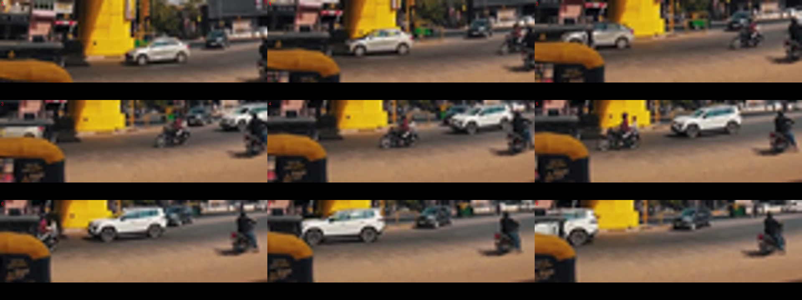
视觉工具实际返回图片 3
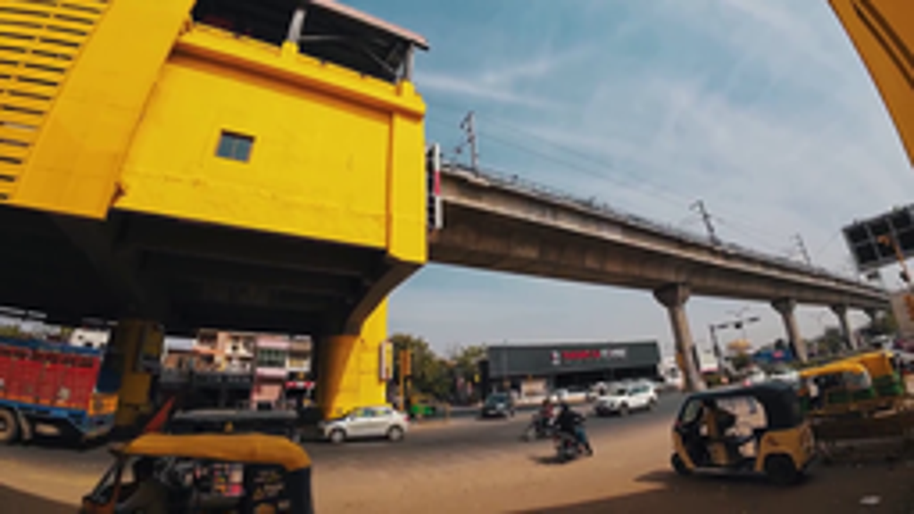
视觉工具实际返回图片 4
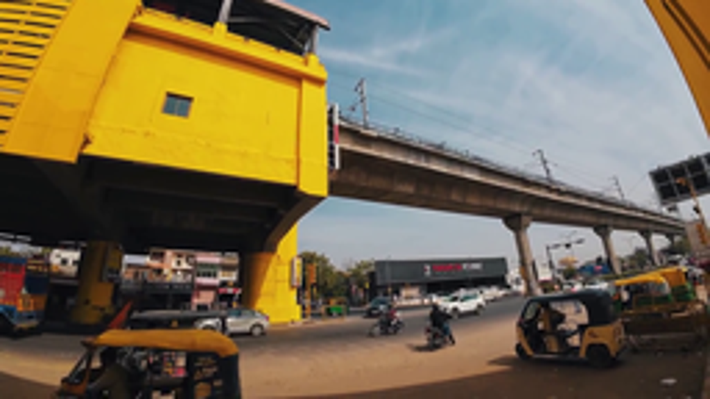
视觉工具实际返回图片 5
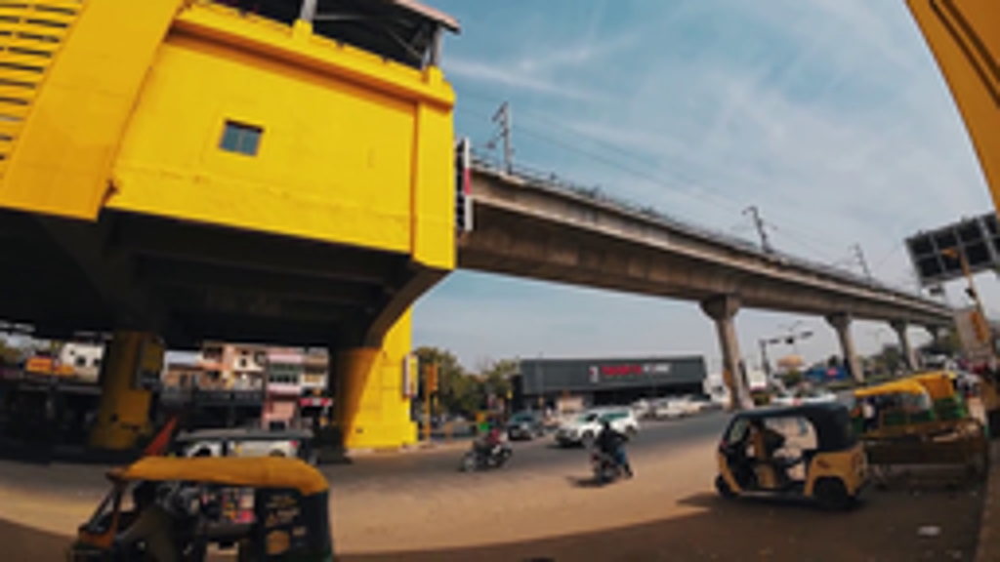
视觉工具实际返回图片 6
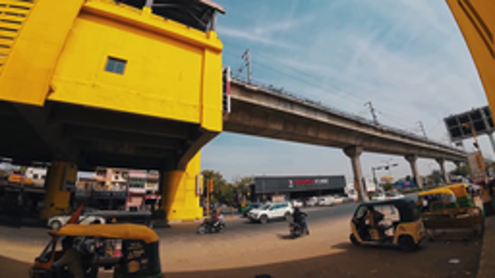
视觉工具实际返回图片 7
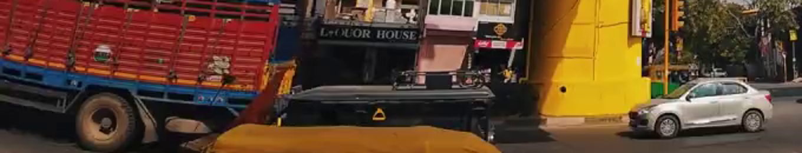
视觉工具实际返回图片 8
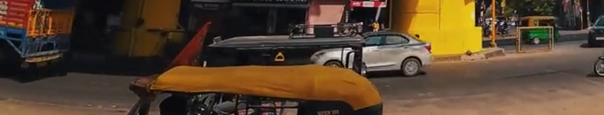
视觉工具实际返回图片 9
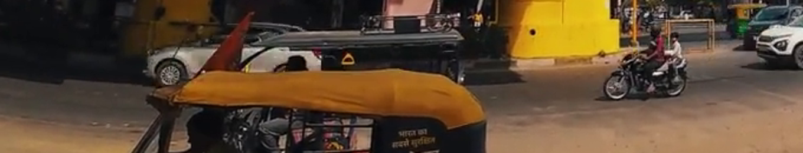
视觉工具实际返回图片 10
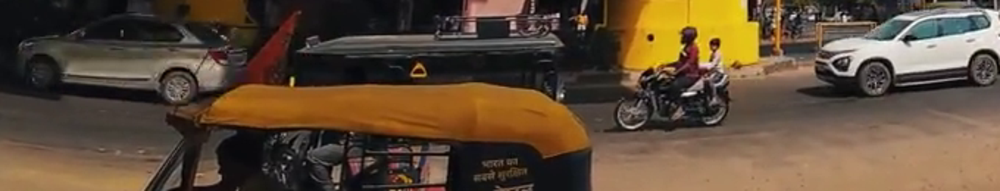
视觉工具实际返回图片 11
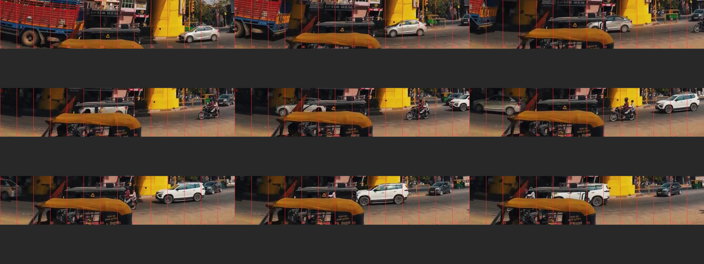
视觉工具实际返回图片 12
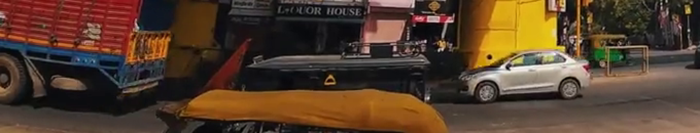
视觉工具实际返回图片 13
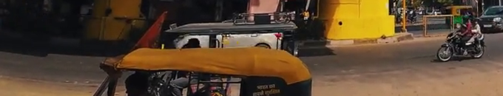
视觉工具实际返回图片 14
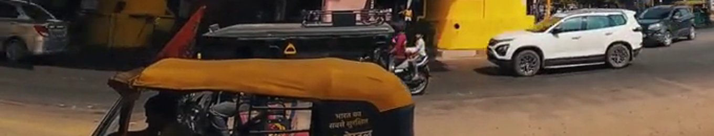
视觉工具实际返回图片 15
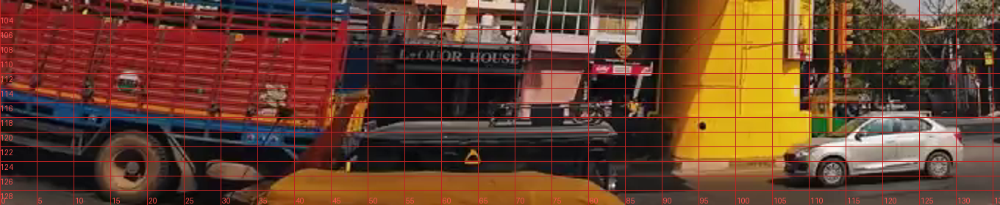
视觉工具实际返回图片 16
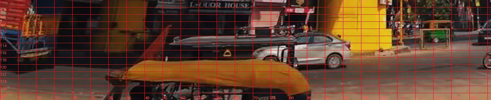
视觉工具实际返回图片 17
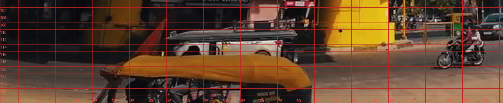
视觉工具实际返回图片 18
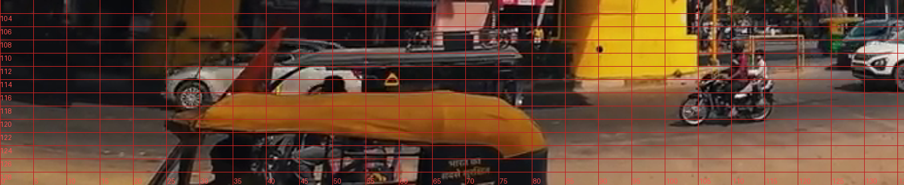
视觉工具实际返回图片 19
视觉工具实际返回图片 20
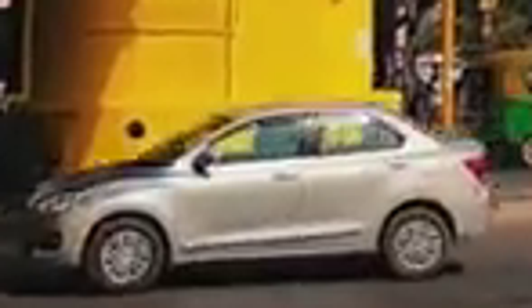
视觉工具实际返回图片 21
视觉工具实际返回图片 22
视觉工具实际返回图片 23
视觉工具实际返回图片 24
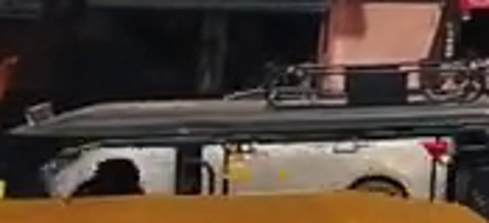
视觉工具实际返回图片 25
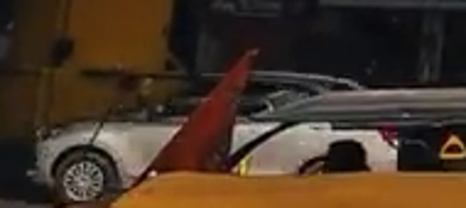
视觉工具实际返回图片 26
视觉工具实际返回图片 27
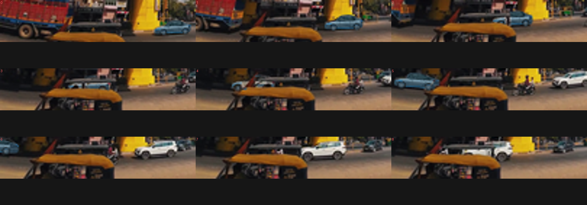
视觉工具实际返回图片 28
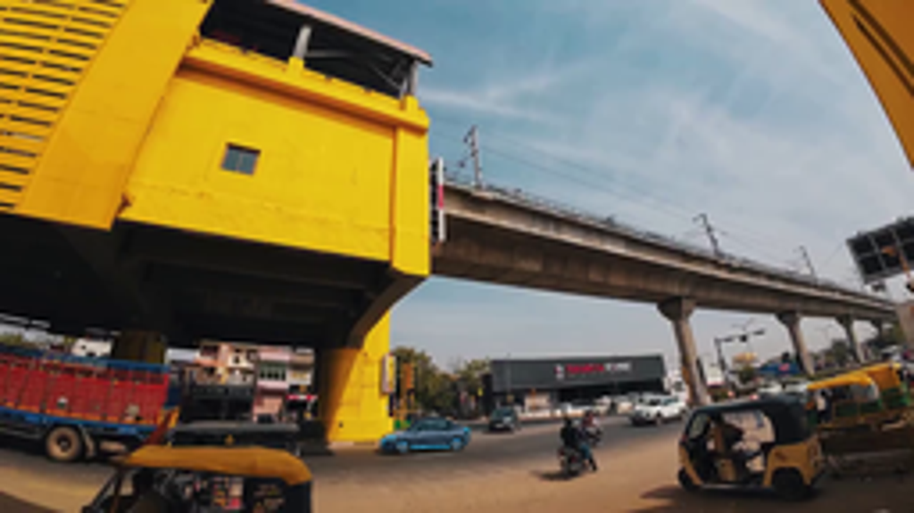
保存候选 3 份；完成命令 13 次；可验证图片返回 28 张。原始 API 响应与完整日志保留在本地。